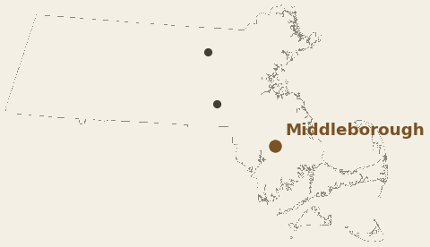
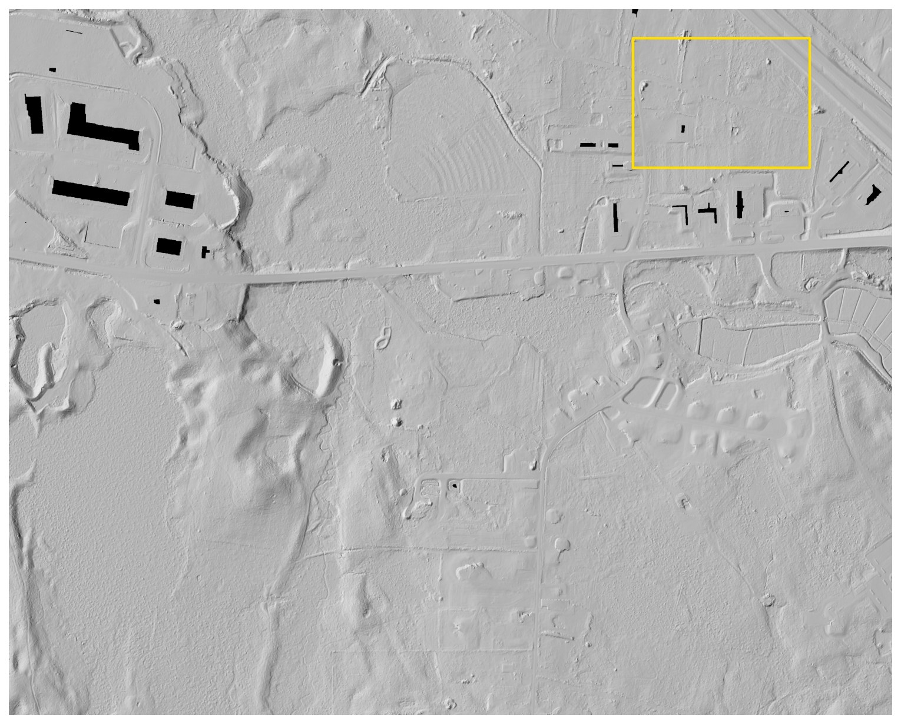
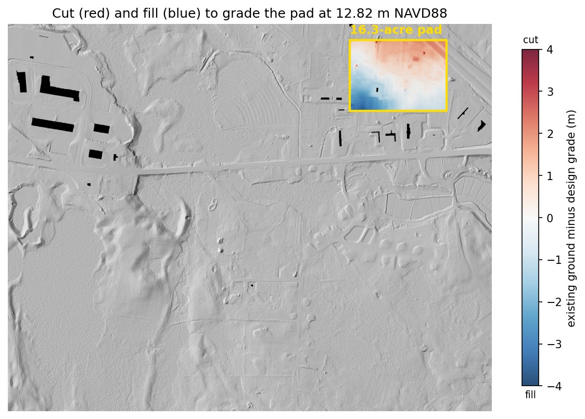
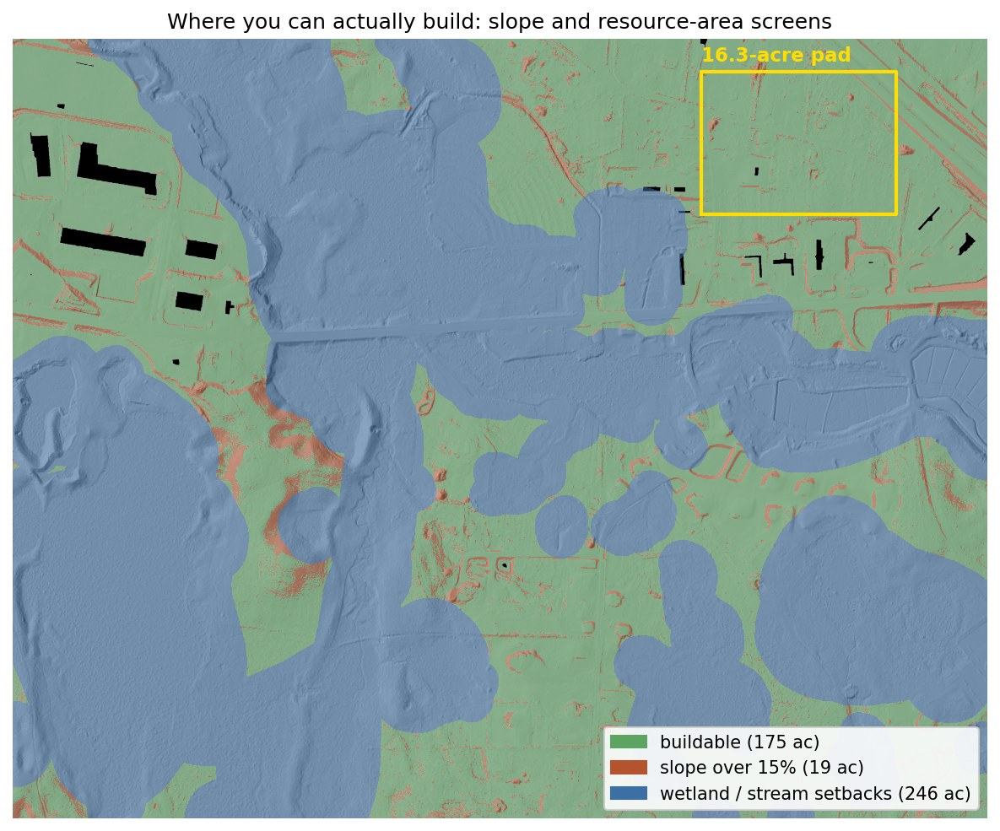
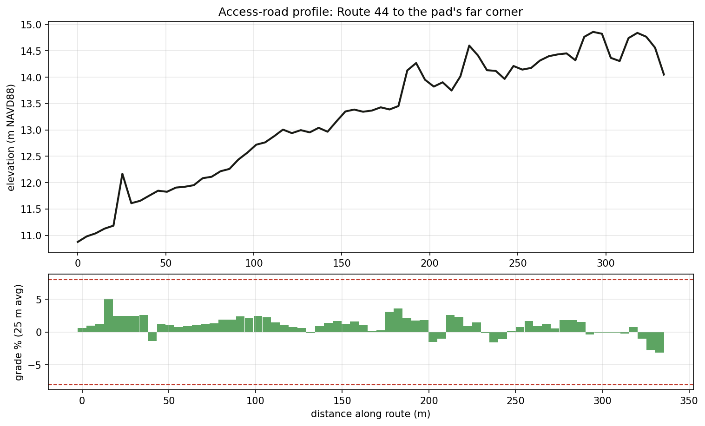
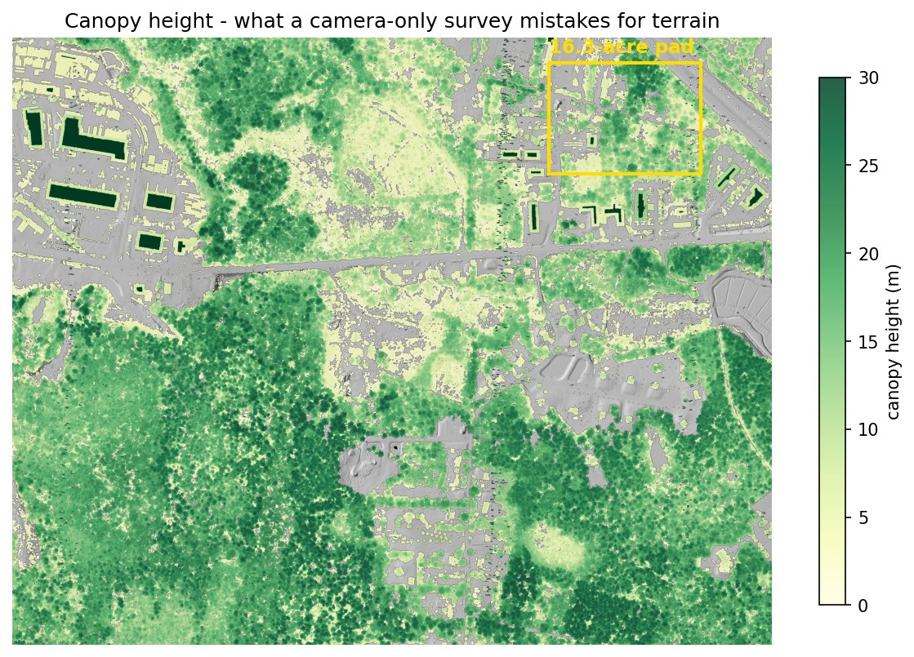
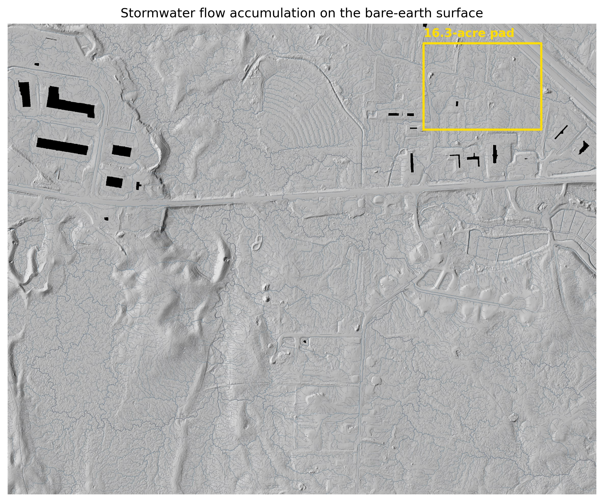
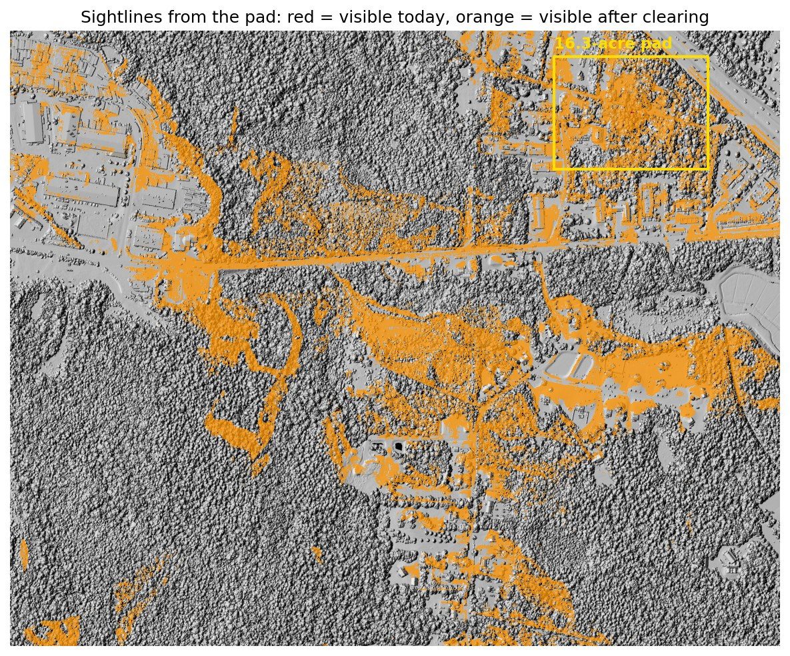
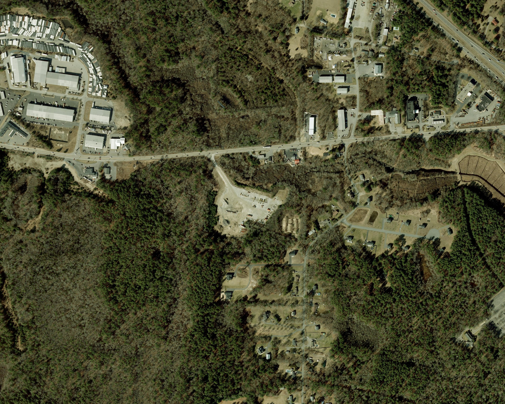

150 wooded acres.
A withdrawn warehouse.
What does the land say?
In 2023 a developer proposed 673,000 square feet of warehouses on forest near the Route 44 / I-495 interchange. The proposal was withdrawn in 2024. This planning-level study uses public LiDAR to ask what terrain, mapped constraints, drainage, and conceptual grading could have contributed before a final design.

Scope: public-data demonstration for planning and comparison. Mapped wetlands and terrain signatures are not field delineations.
Drag the line
Left of the line is the treetop surface — what camera-only mapping is most likely to recover over closed forest. Right of it is the bare ground, recovered from laser returns that made it through gaps in the canopy. Same flight, same week, same points. The yellow rectangle is the building pad analyzed below.


One pad, three surfaces
A 16.3-acre pad sized for the proposed warehouses, sited by an optimization pass over the constraint screens (95.9% clear of wetlands and steep ground — my first hand-drawn attempt turned out to be half swamp, which is exactly what the screens are for). It's 69% forest with canopy to 23 m. Grading it to a level 12.82 m requires:
| Surface used for the estimate | Cut | Fill | Total moved | @ $20 / yd³ |
|---|---|---|---|---|
| Lidar bare earth | 42,273 | 42,164 | 84,437 yd³ | $1.69M |
| Treetop surface (what photos give you) | 775,626 | 13,827 | 789,453 yd³ | $15.79M |
| 10 m national DEM (all you had before 2021) | 52,177 | 34,461 | 86,638 yd³ | $1.73M |
| Error carried by the photo surface | 705,016 yd³ | ≈ $14.10M | ||
The old 10-meter data is a sneakier failure than the photo surface. Its total looks fine — but it calls the site 17,700 yd³ cut-heavy when the site actually balances, mislabels cut vs fill on 7% of the pad, and is locally off by up to 2.9 m. A grading plan based on it would include a haul-off that doesn't exist. (Also a data-diligence note: the "current" national DEM has quietly been rebuilt from the 2021 lidar — to compare against what was actually available before, you have to pull the archived 2019 version — worth checking where any comparison surface actually came from.)
A uniform ±10 cm vertical shift changes the modeled volume by ±8,628 yd³ ≈ ±$173k. This is a data-accuracy sensitivity—not a full construction contingency. Design, soils, water, rock, material handling, and field conditions can create larger changes.

More answers from the same flight
The earthwork number is the headline, but the same dataset answers a bunch of other early-stage questions:






The analysis that wasn't in the hearing room
When the warehouse proposal was argued in 2023–24, most of the technical information in the room came from studies the developer commissioned. Everything on this page comes from free public data and could have been on the table for either side: how much land passes stated terrain screens, where water concentrates, what the neighbors might see, and how conceptual grading compares. The parcel is still forest, still zoned, still on the market in practice — which makes it a live case study rather than a postmortem.

What this means for the deal
| Screening item | Estimate |
|---|---|
| Earthwork, graded to balance | $1.69M ± $173k |
| Clearing, 11.2 forested acres | $34–67k |
| Access terrain flag | screened route is 333 m and peaks at 5.1%; final geometry not designed |
| Terrain-screening subtotal: modeled earthwork + clearing only | ≈ $1.74M |
Not included: final grading design, topsoil, shrink/swell, unsuitable soils, rock, haul/disposal, retaining walls, utilities, stormwater construction, erosion control, mobilization, permitting, survey, or engineering.
The modeled terrain subtotal is lower than in the Hopkinton case; the open questions here are regulatory and field-based. Diligence should cover:
- Wetland delineation before the offer is priced — the pad clears the state's wetland map, but 10 of its 16.3 acres share the terrain-wetness signature of the mapped wetlands. If the field delineation moves the line, the pad moves — worth making the offer contingent on the delineation.
- Check the vintage of any elevation data in the pro forma — the pre-2021 public DEM shows a 17,700 yd³ haul-off that isn't really there, and older underwriting may still be carrying it.
- Vernal pools — depression screen found no candidates in or near the pad; 5 state-mapped potential pools sit elsewhere in the study area. "Screened, clear" at the pad, field confirmation at permitting.
The numbers are checkable
- Data — USGS 3DEP lidar (2021 Central-Eastern Massachusetts, block 2, published accuracy 10 cm RMSE). 49.5 million points for this site. Wetlands and streams: MassGIS DEP layers with 100 ft / 200 ft buffers.
- Processing — same PDAL pipeline as Project 01: ground/vegetation separation, 0.5 m ground model, treetop model, canopy heights. Same scripts, different coordinates — which is most of what I wanted to prove.
- Processing consistency — my ground model compared with the state-published DEM derived from the same flight: 1 mm average difference and 2.0 cm RMSE over open ground. That checks processing agreement, not independent field accuracy. The pre-2021 baseline was pulled from the archived 2019 national DEM after finding the "current" one had been rebuilt from this same lidar.
- Volumes — cell-by-cell raster math, cross-checked in QGIS: agreement to five significant figures. Cost basis is an illustrative $20/yd³ screening assumption, with a $10–$40 sensitivity range; a real project would require current contractor or estimator input.
Public LiDAR includes published accuracy specifications, but these case-study values remain planning-level. Survey-grade or construction-facing work requires licensed control and project-specific professional oversight. Screens run for every project: terrain-wetness discrepancy, closed-depression / vernal-pool candidates, surface roughness. Also available: intensity analysis, contours to CAD, per-tree inventory. Scripts and pipeline files available on request. See the shared method, sources, assumptions, and limitations.